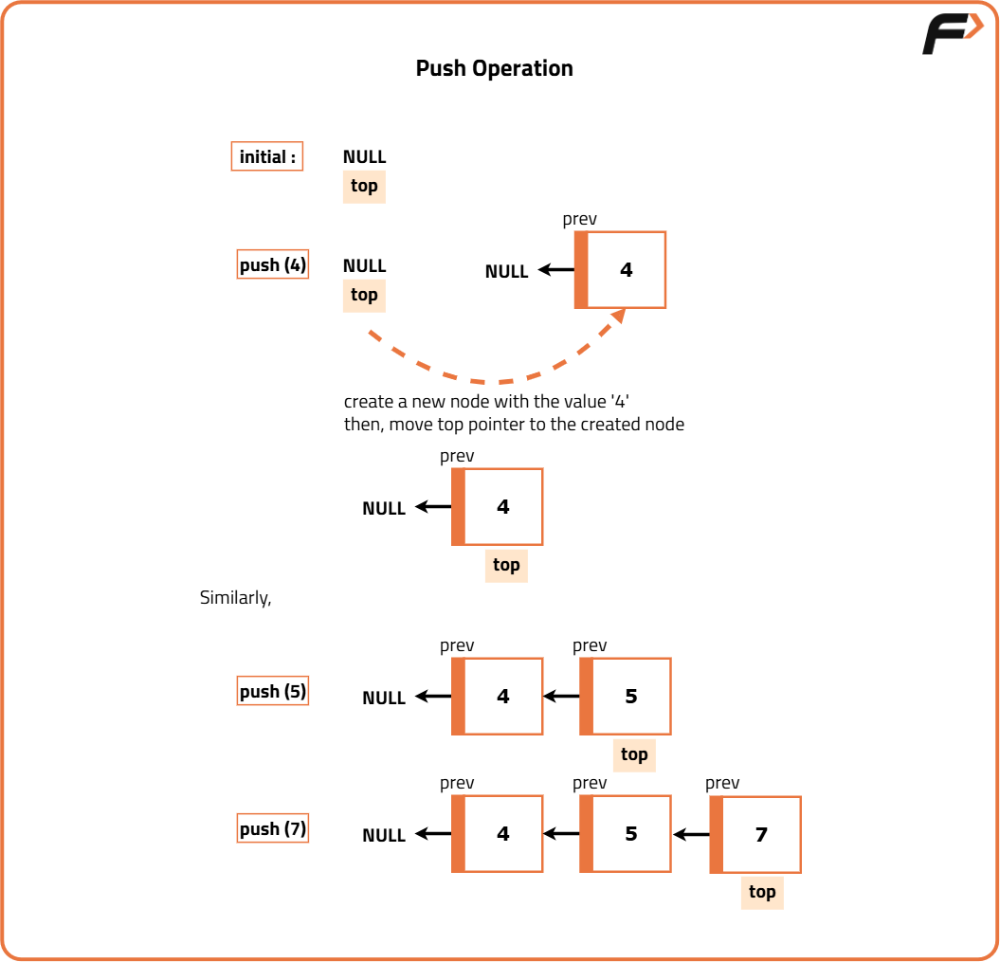
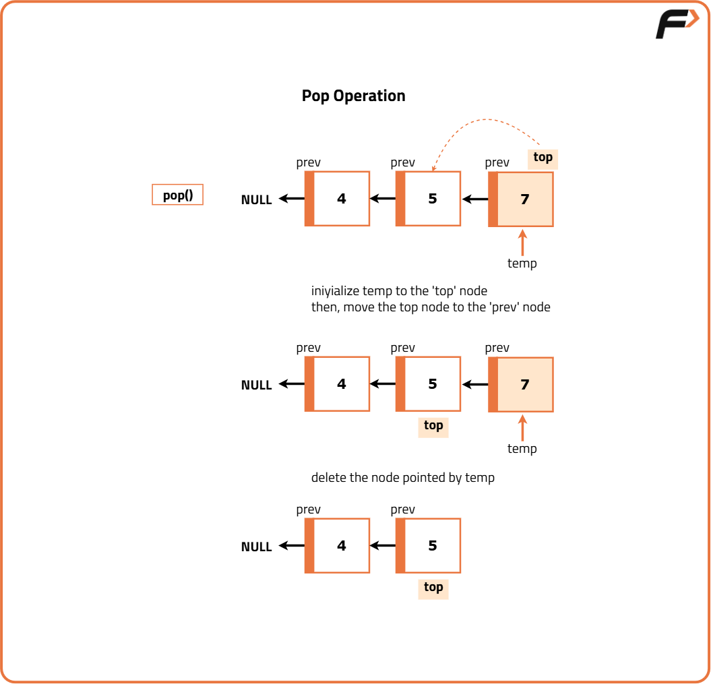

Implement stack using linked list
Problem Statement:
Implement a Last-In-First-Out (LIFO) stack using a singly linked list. The implemented stack should support the following operations: push, pop, top, and isEmpty.
Implement the LinkedListStack class:
Examples
Example 1: Input: ["LinkedListStack", "push", "push", "pop", "top", "isEmpty"] [[], [3], [7], [], [], []] Output: [null, null, null, 7, 3, false] Explanation: LinkedListStack stack = new LinkedListStack(); - stack.push(3); - stack.push(7); - stack.pop(); // returns 7 - stack.top(); // returns 3 - stack.isEmpty(); // returns false Example 2: Input: ["LinkedListStack", "isEmpty"] [[]] Output: [null, true] Explanation: LinkedListStack stack = new LinkedListStack(); - stack.isEmpty(); // returns true
Disclaimer: Here is the practice link to help you assess your knowledge better. It's highly recommend trying to solve it before looking at the solution.
Approach
Algorithm
- Node Structure:
- Define a node with:
- An integer to store data.
- A pointer to the next node.
- A constructor to initialize the data and the next pointer.
- Stack Structure:
- Define a stack with:
- A pointer to the top node.
- An integer to keep track of the size.
- A constructor to initialize the top pointer and size.
- Push Operation:
- Create a new node with the given data and set the new node's next pointer to the current top node.
- Update the top pointer to the new node and increment the size.
- Pop Operation:
- Check if the stack is empty. If it is, return an error value (e.g., -1).
- Store the data of the top node and update the top pointer to the next node.
- Delete the old top node and decrement the size. Return the stored data.
- Peek Operation:
- Check if the stack is empty. If it is, return an error value (e.g., -1).
- Otherwise, return the data of the top node.
- Is Empty Operation:
- Check if the top pointer is null. Return true if it is, otherwise false.
- Size Operation:
- Return the size of the stack.
- Print Stack:
- Traverse from the top node and print each node's data until reaching the end of the list.


Code
#include <bits/stdc++.h>
using namespace std;
// Node structure
struct Node {
int val;
Node *next;
Node(int d) {
val = d;
next = NULL;
}
};
// Structure to represent stack
class LinkedListStack {
private:
Node *head; // Top of Stack
int size; // Size
public:
// Constructor
LinkedListStack() {
head = NULL;
size = 0;
}
// Method to push an element onto the stack
void push(int x) {
// Creating a node
Node *element = new Node(x);
element->next = head; // Updating the pointers
head = element; // Updating the top
// Increment size by 1
size++;
}
// Method to pop an element from the stack
int pop() {
// If the stack is empty
if (head == NULL) {
return -1; // Pop operation cannot be performed
}
int value = head->val; // Get the top value
Node *temp = head; // Store the top temporarily
head = head->next; // Update top to next node
delete temp; // Delete old top node
size--; // Decrement size
return value; // Return data
}
// Method to get the top element of the stack
int top() {
// If the stack is empty
if (head == NULL) {
return -1; // Top element cannot be accessed
}
return head->val; // Return the top
}
// Method to check if the stack is empty
bool isEmpty() {
return (size == 0);
}
};
int main() {
// Creating a stack
LinkedListStack st;
// List of commands
vector<string> commands = {"LinkedListStack", "push", "push",
"pop", "top", "isEmpty"};
// List of inputs
vector<vector<int>> inputs = {{}, {3}, {7}, {}, {}, {}};
for (int i = 0; i < commands.size(); ++i) {
if (commands[i] == "push") {
st.push(inputs[i][0]);
cout << "null ";
} else if (commands[i] == "pop") {
cout << st.pop() << " ";
} else if (commands[i] == "top") {
cout << st.top() << " ";
} else if (commands[i] == "isEmpty") {
cout << (st.isEmpty() ? "true" : "false") << " ";
} else if (commands[i] == "LinkedListStack") {
cout << "null ";
}
}
return 0;
}Complexity Analysis
Time Complexity: O(1) for push, pop, size, isEmpty, peek operations.
Space Complexity: O(N) because the stack requires space proportional to the number of elements it stores.